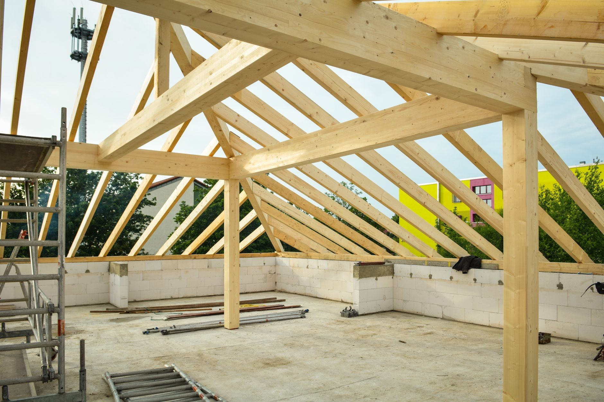
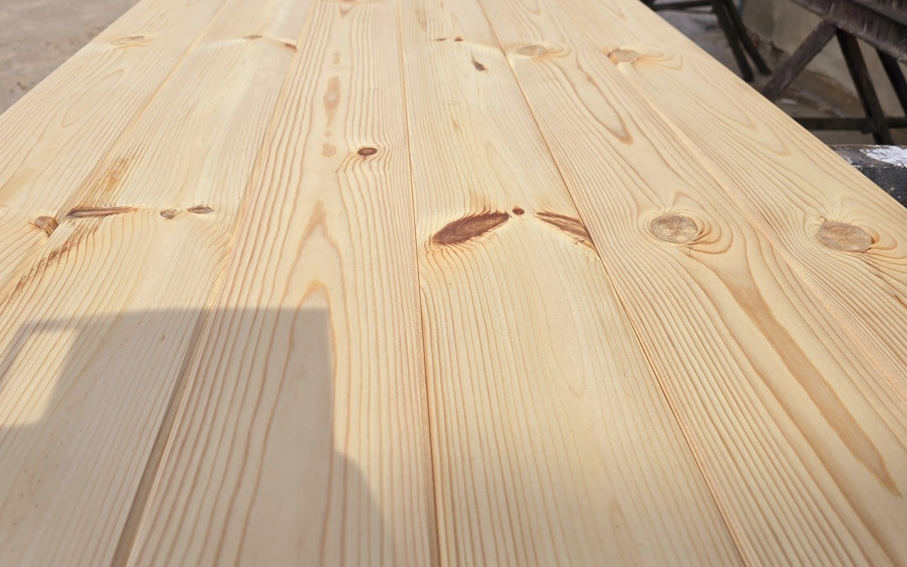
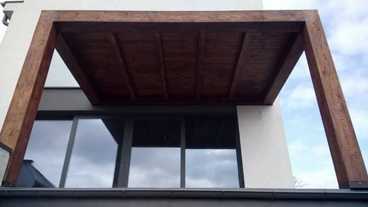
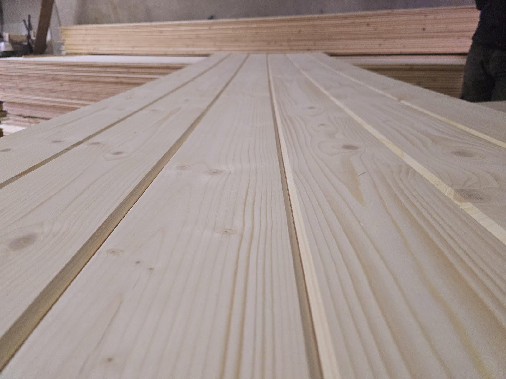
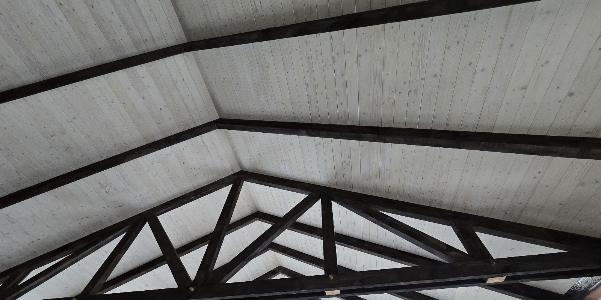
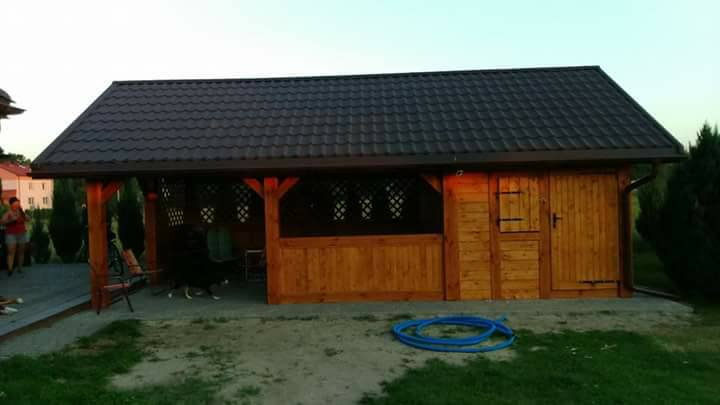
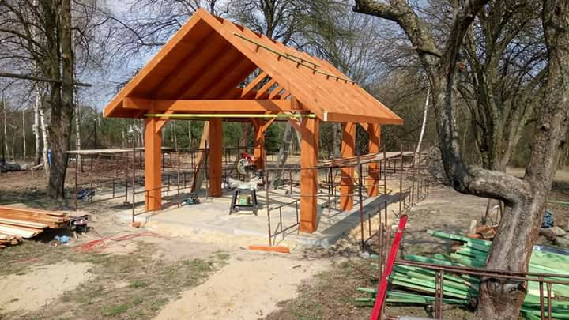

Jedna część roboty to materiał z tartaku, druga to ciesielka na miejscu u klienta. Można zamówić samo drewno albo całą konstrukcję razem z postawieniem.

Strugana deska na elewację domu, garażu i budynku gospodarczego. Dobieramy profil i szerokość pod to, jak ma wyglądać ściana, i przygotowujemy materiał na wymiar.

Deska na taras, podbitka pod okap i zadaszenie. Materiał obrobiony tak, żeby ekipa mogła go od razu montować, bez dorabiania na budowie.

Boazeria, imitacja bala, deska podłogowa i listwy wykończeniowe. Wszystko z jednej partii drewna, więc odcień się zgadza także przy dokupieniu metrów.

Robimy więźbę od pomiaru po postawienie na murze. Kantówka docięta w tartaku, na budowie zostaje złożenie konstrukcji.

Wiata na auto, altana ogrodowa, domek narzędziowy. Stawiamy z drewna konstrukcyjnego razem z pokryciem i wykończeniem.

Kantówka, łata, krokiew i tarcica budowlana cięta na wymiar z zamówienia. Odbiór na miejscu w Trójni albo transport pod budowę.
Prosty, przewidywalny proces - wiesz, na czym stoisz na każdym etapie.
Opowiadasz, czego potrzebujesz, a my doradzamy najlepsze rozwiązanie.
Dostajesz jasną cenę i termin, zanim cokolwiek ruszy.
Robimy na czas i zgodnie z ustaleniami.
Napisz, co chcesz zrobić - odpowiemy z propozycją i wyceną.